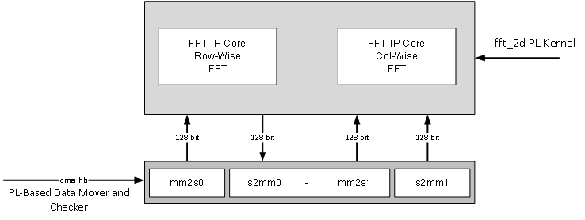

In this section, you will build and run the 2D-FFT design using the HLS/DSP implementation. You will compile the HLS/DSP design and integrate it into a larger system design (including the PL kernels and PS host application).
At the end of this section, the design flow will generate a new directory (called build/). Underneath are sub-directories named fft2d_$(MAT_ROWS)x$(MAT_COLS)/x$(FFT_2D_INSTS)/ (fft2d_1024x2048/x1/, for example) depending on the value of the matrix dimensions (${MAT_ROWS}, ${MAT_COLS}) and the number of instances ($(FFT_2D_INSTS)) chosen in the build. Each sub-directory contains the hw_emu/ and/or hw/ subfolders. These sub-folders contain a host app executable and the builds targeted to hw or hw_emu respectively. The hw_emu/ sub-folder contains the build for hardware emulation. The hw/ sub-folder contains the build for a hardware run on a VCK190 board.
To run the following make steps (for example, make kernels, make xclbin, and so on), you must be in the HLS/ folder. The following options can be specified in the make steps. Instructions for how to apply them are provided later in this section.
TARGET: This option can be set to hw or hw_emu to build the design in the hardware or hardware emulation flow. The default is hw_emu.
FFT_2D_INSTS: This option can be set to 1, 5, or 10 to build the design with the number of kernel instances. The default is 1.
ITER_CNT: The number of iterations the design is run. The default is 8.
FFT_2D_PT: FFT 2D point. Permissible values are 64, 128, 256, 512, and 2048.
MAT_ROWS x MAT_COLS: Dimensions of the matrix (number of rows in the input matrix x number of cols in the input matrix). Automatically configured as FFT_2D_PT/2, FFT_2D_PT. Permissible values are 32x64, 64x128, 128x256, 256x512, and 1024x2048. The default is 1024x2048.
EN_TRACE: Flag to enable trace profiling. 0 is disabled and 1 is enabled. The default is 0 (disabled).
The Makefile uses the following directory references:
# Relative fft_2d directory
RELATIVE_PROJECT_DIR := ./
# Absolute fft_2d directory = <user path>/Tutorials/AI_Engine/fft_2d
PROJECT_REPO := $(shell readlink -f $(RELATIVE_PROJECT_DIR))
DESIGN_REPO := $(PROJECT_REPO)/design
HOST_APP_SRC := $(DESIGN_REPO)/host_app_src
PL_SRC_REPO := $(DESIGN_REPO)/pl_src
DIRECTIVES_REPO := $(DESIGN_REPO)/directives
SYSTEM_CONFIGS_REPO := $(DESIGN_REPO)/system_configs
PROFILING_CONFIGS_REPO := $(DESIGN_REPO)/profiling_configs
BASE_BLD_DIR := $(PROJECT_REPO)/build
FFTPT_BLD_DIR := $(BASE_BLD_DIR)/fft2d_$(MAT_ROWS)x$(MAT_COLS)
INSTS_BLD_DIR := $(FFTPT_BLD_DIR)/x$(FFT_2D_INSTS)
BUILD_TARGET_DIR := $(INSTS_BLD_DIR)/$(TARGET)
If you are already familiar with the HLS and Vitis kernel compilation flows, you can build the entire design for each case of FFT_2D_INSTS with one command:
make run (default hardware emulation, 1 instance, iterations=8, matrix dimentions rows=1024 and columns=2048, no trace-profiling )
or
make run TARGET=hw FFT_2D_INSTS=5 ITER_CNT=16 EN_TRACE=1 FFT_2D_PT=64 (hardware, 5 instances, 16 iterations, enable trace profiling, matrix dimentions rows=32 and columns=64 )
This command runs the make kernels, make xclbin, make application, make package, and make run_emu steps for hardware emulation or to run on hardware (VCK190 board) depending on the TARGET you specify. The settings also apply to individual make steps listed below.
The generated files for each FFT_2D_INSTS are placed under an individual directory: $(BUILD_TARGET_DIR)/. Each make step to build the design is specified in the following sections. These sections also detail the options used and the location of input and output files in each case.
In this step, the Vitis compiler takes any V++ kernels (RTL or HLS C) in the PL region of the target platform (xilinx_vck190_base_202110_1) and the HLS kernels and compiles them into their respective XO files. The following commands compile the kernels (default TARGET=hw_emu, FFT_2D_INSTS=1, ITER_CNT=8, and FFT_2D_PT=2048).
make kernels
The expanded command is as follows (for fft_2d):
mkdir -p $(BUILD_TARGET_DIR); \
cd $(BUILD_TARGET_DIR); \
v++ --target hw_emu --hls.pre_tcl $$(DIRECTIVES_REPO)/hls_pre.tcl \
--hls.clock 500000000:fft_2d -D MAT_ROWS=1024 -D MAT_COLS=2048 \
--platform xilinx_vck190_base_202110_1 --save-temps --temp_dir $(BUILD_TARGET_DIR)/_x \
--verbose -g -c -k fft_2d $(DESIGN_REPO)/pl_src/fft_2d.cpp -o $(BUILD_TARGET_DIR)/fft_2d.hw_emu.xo
For dma_hls:
mkdir -p $(BUILD_TARGET_DIR); \
cd $(BUILD_TARGET_DIR); \
v++ --target hw_emu --hls.clock 250000000:dma_hls --platform xilinx_vck190_base_202110_1 \
--save-temps --temp_dir $(BUILD_TARGET_DIR)/_x --verbose -g -c -k dma_hls \
$(DESIGN_REPO)/pl_src/dma_hls.cpp -o $(BUILD_TARGET_DIR)/dma_hls.hw_emu.xo
See this page for a detailed description of all Vitis compiler switches. The following table provides a summary of the switches used.
| Switch | Description |
|---|---|
| --target | -t [hw|hw_emu] | Specifies the build target. |
| --hls.pre_tcl \<arg> | Specifies a Tcl file containing Tcl commands for vitis_hls to source before running csynth_design. See this page for details about HLS options. |
| --platform | -f | Specifies the name of a supported acceleration platform as specified by the $PLATFORM_REPO_PATHS environment variable or the full path to the platform XPFM file. |
| --save-temps | -s | Directs the Vitis compiler command to save intermediate files/directories created during the compilation and link process. Use the --temp_dir option to specify a location to write the intermediate files to. |
| --temp_dir |
This allows you to manage the location where the tool writes temporary files created during the build process. The temporary results are written by the Vitis compiler, and then removed, unless the --save-temps option is also specified. |
| --verbose | Display verbose/debug information. |
| --compile | -c | Required for compilation to generate XO files from kernel source files. |
| --kernel \<arg>|-k \<arg> | Compile only the specified kernel from the input file. Only one -k option is allowed per Vitis compiler command. |
| -D | --define \<Macro Name>=\<value> | Defines Macros for the compiler. |
| --output | -o | Specifies the name of the output file generated by the V++ command. The DMA HLS kernels output should be XO. |
| Input | Description |
|---|---|
| $(PL_SRC_REPO)/fft_2d.cpp | Defines the fft_2d PL kernel. |
| $(PL_SRC_REPO)/dma_hls.cpp | Defines the data mover PL kernel. |
| Output | Description |
|---|---|
| $(BUILD_TARGET_DIR)/dma_hls.hw_emu.xo | The data mover kernel object file. |
After the HLS kernels have been compiled, you can use the Vitis compiler to link them with the platform to generate an XCLBIN file.
The Vitis tools allow you to integrate the HLS kernels into an existing extensible platform. This is an automated step from a software developer perspective where the platform chosen is provided by the hardware designer (or you can opt to use one of the many extensible base platforms provided by Xilinx and the Vitis tools build the hardware design and integrate the HLS kernels into the design).
To test this feature in this tutorial, use the base VCK190 platform to build the design.
The command to run this step is shown as follows (default TARGET=hw_emu, FFT_2D_INSTS=1, ITER_CNT=8, EN_TRACE=0, FFT_2D_PT=2048):
make xclbin
The expanded command is as follows:
cd $(BUILD_TARGET_DIR); \
v++ -l --platform xilinx_vck190_base_202110_1 --save-temps --temp_dir $(BUILD_TARGET_DIR)/_x \
--verbose -g --clock.freqHz 500000000:fft_2d_0 --clock.freqHz 250000000:dma_hls_0 --clock.defaultTolerance 0.001 \
--advanced.param compiler.userPostSysLinkOverlayTcl=$(DIRECTIVES_REPO)/cdc_async.tcl \
--config $(SYSTEM_CONFIGS_REPO)/x1.cfg --vivado.prop fileset.sim_1.xsim.simulate.log_all_signals=true \
--vivado.prop run.synth_1.{STEPS.SYNTH_DESIGN.ARGS.CONTROL_SET_OPT_THRESHOLD}={16} \
--vivado.prop run.impl_1.{strategy}={Performance_NetDelay_low} \
--vivado.prop run.impl_1.{STEPS.OPT_DESIGN.ARGS.DIRECTIVE}={Explore} \
-t hw_emu -o $(BUILD_TARGET_DIR)/vck190_dsp_fft_2d.hw_emu.xclbin $(BUILD_TARGET_DIR)/fft_2d.hw_emu.xo \
$(BUILD_TARGET_DIR)/dma_hls.hw_emu.xo
The above vivado.prop settings are for every variation except for the 10-instance variation for 256 x 512 and 1024 x 2048. The settings for these dimensions are given in the following examples.
For the 256 x 512 10-instance design:
--vivado.prop run.synth_1.{STEPS.SYNTH_DESIGN.ARGS.CONTROL_SET_OPT_THRESHOLD}={16}
--vivado.prop run.impl_1.{strategy}={Performance_HighUtilSLRs}
--vivado.prop run.impl_1.{STEPS.OPT_DESIGN.ARGS.DIRECTIVE}={Explore}
--vivado.prop run.impl_1.{STEPS.PHYS_OPT_DESIGN.ARGS.DIRECTIVE}={AggressiveExplore}
--vivado.prop run.impl_1.{STEPS.ROUTE_DESIGN.ARGS.DIRECTIVE}={AggressiveExplore}
For the 1024 x 2048 10-instance design:
--vivado.prop run.synth_1.{STEPS.SYNTH_DESIGN.ARGS.CONTROL_SET_OPT_THRESHOLD}={16}
--vivado.prop run.impl_1.{strategy}={Performance_HighUtilSLRs}
--vivado.prop run.impl_1.{STEPS.OPT_DESIGN.ARGS.DIRECTIVE}={AddRemap}
If EN_TRACE is enabled, the following Vitis compiler flags are also set:
--profile.data dma_hls:all:all or profile.data dma_hls:all:strmInp_from_colwiseFFT (for higher instances) \
--profile.trace_memory DDR
For higher values of FFT_2D_INSTS, only the strmInp_from_colwiseFFT port is profiled to avoid too much data.
See this page for a detailed description of Vitis linking options. The following table provides a summary of the switches used.
| Switch | Description |
|---|---|
| --platform | -f | Specifies the name of a supported acceleration platform as specified by the $PLATFORM_REPO_PATHS environment variable or the full path to the platform XPFM file. |
| --save-temps | -s | Directs the V++ command to save intermediate files/directories created during the compilation and link process. Use the --temp_dir option to specify a location to write the intermediate files to. |
| --temp_dir |
This allows you to manage the location where the tool writes temporary files created during the build process. The temporary results are written by the Vitis compiler, and then removed, unless the --save-temps option is also specified. |
| --verbose | Display verbose/debug information. |
| --output | -o | Specifies the name of the output file generated by the V++ command. In this design the outputs of the HLS/DSP kernels with their interfacing with the PL kernels are in XO files. |
| --vivado.prop \<arg> | Specifies properties for the Vivado Design Suite to be used during synthesis and implementation of the FPGA binary (xclbin). See this page for detailed Vivado options. |
| --profile.data [ |
Enables monitoring of data ports through the monitor IPs. This option needs to be specified during linking. See this page for detailed profiling options. |
| --profile.trace_memory \<FIFO>:\<size>|\<MEMORY>[\<n>] | When building the hardware target (-t=hw), use this option to specify the type and amount of memory to use for capturing trace data. See this page for detailed profiling options. |
| --config |
Specifies a configuration file containing V++ switches. |
The information to tell the linker how to connect the HLS/DSP and PL kernels together is described in a configuration file, system_configs/x$(FFT_2D_INSTS).cfg. The file describes the overall connection scheme of the system.
[connectivity]
nk=fft_2d:1:fft_2d_0
nk=dma_hls:1:dma_hls_0
#Connections For FFT-2D Insts 0...
stream_connect=dma_hls_0.strmOut_to_rowiseFFT:fft_2d_0.strmFFTrows_inp
stream_connect=fft_2d_0.strmFFTrows_out:dma_hls_0.strmInp_from_rowiseFFT
stream_connect=dma_hls_0.strmOut_to_colwiseFFT:fft_2d_0.strmFFTcols_inp
stream_connect=fft_2d_0.strmFFTcols_out:dma_hls_0.strmInp_from_colwiseFFT
[advanced]
# Disable Profiling in hw_emu so that it is faster...
param=hw_emu.enableProfiling=false
# Export the xsa of the design..
param=compiler.addOutputTypes=hw_export
See this page for a detailed description of the Vitis compiler configuration file. A summary of the configuration options used is provided in the following table.
| Switch | Comment |
|---|---|
| --connectivity.nk | Number of kernels. dma_hls:1:dma_hls_0 means that the Vitis compiler should instantiate one dma_hls kernel and name the instance dma_hls_0. |
| --connectivity.stream_connect | How the kernels will connect to IPs, platforms, or other kernels. The elaborates the streaming port connections like. dma_hls_0.strmOut_to_rowiseFFT:fft_2d_0.strmFFTrows_inp means that the Vitis compiler should connect the port strmOut_to_rowiseFFT of dma_hls_0 HLS kernel to the strmFFTrows_inp of the fft_2d_0 HLS kernel. |
| param=compiler.addOutputTypes=hw_export | This option tells the Vitis compiler that besides creating an XCLBIN file, it also outputs an XSA file which is needed to create a post-Vivado fixed platform for Vitis software development. |
The Vitis compiler calls the Vivado® IP integrator under the hood to build the design. The platform and kernels are input to the Vivado Design Suite, which produces a simulation XSA or an XSA after running place and route on the design. The point at which the XSA is produced from Vivado depends on the -target option set on the Vitis compiler command line.
You can now view the Vivado project, which is located in the $(BUILD_TARGET_DIR)/_x/link/vivado/vpl/prj directory. You have now have generated the XCLBIN file, $(BUILD_TARGET_DIR)/vck190_dsp_fft_2d.hw_emu.xclbin, that will be used to execute your design on the platform.
You can compile the host application by following the typical cross-compilation flow for the Cortex A72 processor. To build the application, run the following command (default FFT_2D_INSTS=1, ITER_CNT=8, FFT_2D_PT=2048):
make application
or
cd $(BUILD_TARGET_DIR); \
aarch64-xilinx-linux-g++ -mcpu=cortex-a72.cortex-a53 -march=armv8-a+crc -fstack-protector-strong \
-D_FORTIFY_SOURCE=2 -Wformat -Wformat-security -Werror=format-security --sysroot=$(SDKTARGETSYSROOT) -O -c \
-std=c++14 -D__linux__ -DFFT2D_INSTS=10 -DITER_CNT=8 -DMAT_ROWS=1024 -DMAT_COLS=2048 \
-I$(SDKTARGETSYSROOT)/usr/include/xrt -I$(SDKTARGETSYSROOT)/usr/include -I$(SDKTARGETSYSROOT)/usr/lib \
-I$(HOST_APP_SRC) $(HOT_APP_SRC)/fft_2d_dsp_app.cpp -o $(BUILD_TARGET_DIR)/fft_2d_dsp_app.o \
-L$(SDKTARGETSYSROOT)/lib -lxrt_coreutil
aarch64-xilinx-linux-g++ -mcpu=cortex-a72.cortex-a53 -march=armv8-a+crc -fstack-protector-strong \
-D_FORTIFY_SOURCE=2 -Wformat -Wformat-security -Werror=format-security --sysroot=$(SDKTARGETSYSROOT) \
$(BUILD_TARGET_DIR)/fft_2d_dsp_app.o -L$(SDKTARGETSYSROOT)/usr/lib -lxrt_coreutil \
-o $(BUILD_TARGET_DIR)/fft_2d_dsp_xrt.elf
See this page for XRT documentation. See this page for details of host application programming.
| Switch | Description |
|---|---|
| -O | Optimize. | Optimizing compilation takes somewhat more time, and a lot more memory for a large function. With -O, the compiler tries to reduce code size and execution time, without performing any optimizations that can take a great deal of compilation time. |
| -D__linux__ | |
| -DXAIE_DEBUG | Enable debug interface capabilities where certain core status, event status, or stack trace can be dumped out. |
| -D\<Pre-processor Macro String>=\<value> | Pass Pre-processor Macro definitions to the cross-compiler. |
| -I \<dir> | Add the directory dir to the list of directories to be searched for header files. |
| -o \<file> | Place output in file <file>. This applies regardless of the output being produced, whether it be an executable file, an object file, an assembler file or preprocessed C code. |
| --sysroot=\<dir> | Use dir as the logical root directory for headers and libraries. For example, if the compiler would normally search for headers in /usr/include and libraries in /usr/lib, it will instead search dir/usr/include and dir/usr/lib. This is automatically set by the env_setup.sh script |
| -l\<library> | Search the library named library when linking. The 2D-FFT tutorial requires adf_api_xrt and xrt_coreutil libraries. |
| -L \<dir> | Add directory <dir> to the list of directories to be searched for -l. |
The following is a description of the input sources compiled by the cross-compiler compiler command.
| Inputs Sources | Description |
|---|---|
| $(HOST_APP_SRC)/fft_2d_dsp_app.cpp | Source application file for the fft_2d_dsp_xrt.elf that will run on an A72 processor. |
The following is a description of the output objects that results from executing the cross-compiler command with the above inputs and options.
| Output Objects | Description |
|---|---|
| $(BUILD_TARGET_DIR)/fft_2d_dsp_xrt.elf | The executable that will run on an A72 processor. |
With the HLS/DSP outputs created, as well as the new platform, you can now generate the programmable device image (PDI) and a package to be used on an SD card. The PDI contains all the executables, bitstreams, and configurations of the device. The packaged SD card directory contains everything to boot Linux, the generated applications, and the XCLBIN.
The command to run this step is as follows (default TARGET=hw_emu, EN_TRACE=0, FFT_2D_INSTS=1, FFT_2D_PT=2048):
make package
or
cp $(PROJECT_REPO)/run_script.sh $(BUILD_TARGET_DIR)/
cd $(BUILD_TARGET_DIR); \
v++ -p -t hw --save-temps --temp_dir $(BUILD_TARGET_DIR)/_x -f xilinx_vck190_base_202110_1 \
--package.rootfs $(XLNX_VERSAL)/rootfs.ext4 --package.kernel_image $(XLNX_VERSAL)/Image --package.boot_mode=sd \
--package.out_dir $(BUILD_TARGET_DIR)/package --package.image_format=ext4 --package.sd_file $(BUILD_TARGET_DIR)/fft_2d_dsp_xrt.elf \
$(BUILD_TARGET_DIR)/vck190_dsp_fft_2d.hw.xclbin
If EN_TRACE is enabled, the following Vitis compiler flags are also set:
--package.sd_file $(PROFILING_CONFIGS_REPO)/xrt.ini
If the XRT_ROOT is set, the following Vitis compiler flags are also set:
--package.sd_dir $(XRT_ROOT)
See this page for more details about packaging the system.
| Switch | Description |
|---|---|
| --target | -t [hw|hw_emu] | Specifies the build target. |
| --package | -p | Packages the final product at the end of the Vitis compile and link build process. |
| --package.rootfs \<arg> | Where \<arg> specifies the absolute or relative path to a processed Linux root file system file. The platform RootFS file is available for download from xilinx.com. Refer to the Vitis Software Platform Installation for more information. |
| --package.kernel_image \<arg> | Where \<arg> specifies the absolute or relative path to a Linux kernel image file. Overrides the existing image available in the platform. The platform image file is available for download from xilinx.com. Refer to the Vitis Software Platform Installation for more information. |
| --package.boot_mode \<arg> | Where \<arg> specifies |
| --package.image_format | Where \<arg> specifies \<ext4|fat32> output image file format. ext4 is the Linux file system and fat32 is the Windows file system. |
| --package.sd_file | Where \<arg> specifies an ELF or other data file to package into the sd_card directory/image. This option can be used repeatedly to specify multiple files to add to the sd_card. |
| Inputs Sources | Description |
|---|---|
| $(XRT_ROOT) | The PS host application needs the XRT headers in this folder to execute. Set in the env_setup.sh. |
| $(XLNX_VERSAL)/rootfs.ext4 | The root filesystem file for PetaLinux. |
| $(XLNX_VERSAL)/Image | The pre-built PetaLinux image the processor boots from. |
| $(BUILD_TARGET_DIR)/fft_2d_dsp_xrt.elf | The PS host application executable created in the make application step. |
| $(BUILD_TARGET_DIR)/vck190_dsp_fft_2d.hw_emu.xclbin | The XCLBIN file created in the make xclbin step. |
The output of the V++ Package step is the package directory that contains the contents to run hardware emulation.
| Output Objects | Description |
|---|---|
| $(BUILD_TARGET_DIR)/package | The hardware emulation package that contains the boot file, hardware emulation launch script, the PLM and PMC boot files, the PMC and QEMU command argument specification files, and the Vivado simulation folder. |
After packaging, everything is set to run hardware emulation. To run emulation, use the following command (default TARGET=hw_emu):
make run_emu
or
###########################################################################
Hardware Emulation Goto:
$(BUILD_TARGET_DIR)/package
and do:
./launch_hw_emu.sh or ./launch_hw_emu.sh -g (for waveform viewer)...
When hardware emulation is launched, you will see the QEMU simulator load. Wait for the autoboot countdown to go to zero. After a few minutes, the root Linux prompt comes up:
root@versal-rootfs-common-2021.1:~#
After the root prompt comes up, run the following commands to run the design:
mount /dev/mmcblk0p1 /mnt
cd /mnt
export XILINX_XRT=/usr
./fft_2d_dsp_xrt.elf a.xclbin
The fft_2d_aie_xrt.elf executes. After a few minutes, you should see the output with TEST PASSED on the console. When this is shown, run the following keyboard command to exit the QEMU instance:
#To exit QEMU Simulation
Press CtrlA, let go of the keyboard, and then press x
To run with waveform, do the following:
cd $(BUILD_TARGET_DIR)/package
./launch_hw_emu.sh -g
The XSIM Waveform Viewer is launched. Drag and drop the signals into the viewer and click Play to start the emulation. Go back to the terminal and wait for the Linux prompt to show up. In the XSIM Waveform Viewer, you will see the signals you added to the waveform adjusting over the execution of the design. When this is done, hit the pause button and close the window to end the emulation.
The following figure shows a waveform view of the 32x64 - 1x design.
To run the design in hardware, rerun the following make steps with TARGET=hw and other applicable options (see the preceding make steps specified above).
make kernels TARGET=hw
make xclbin TARGET=hw
make package TARGET=hw
These commands create a $(BUILD_TARGET_DIR) folder with the kernels, XCLBIN, and package for a hardware run.
Run the following step to set up the execution file, generated images, and base images ($(BUILD_TARGET_DIR)/package/sd_card and $(BUILD_TARGET_DIR)/package/sd_card.img).
make run_emu TARGET=hw
These commands create a build/hw folder with the kernels, XCLBIN, and package for a hardware run. Follow steps 1-9 to run the fft_2d_dsp_xrt.elf executable on your VCK190 board.
Step 1. Ensure your board is powered off.
Step 2. Use an SD card writer (such as balenaEtcher) to flash the sd_card.img file to an SD card.
Step 3. Plug the flashed SD card into the top slot of the VCK190 board.
Step 4. Set the switch (SW1 Mode\[3:0\]=1110 = OFF OFF OFF ON).
Step 5. Connect your computer to the VCK190 board using the USB cable included with the board.
Step 6. Open a TeraTerm terminal and select the correct COM port. Set the port settings to the following:
Port: <COMMXX>
Speed: 115200
Data: 8 bit
Parity: none
Stop Bits: 1 bit
Flow control: none
Transmit delay: 0 msec/char 0 msec/line
Step 7. Power on the board.
Step 8. Wait until you see the root@versal-rootfs-common-2021_1 Linux command prompt. Press enter a few times to get past any xinit errors.
Step 9. Run the following commands in the TeraTerm terminal:
cd /mnt/sd-mmcblk0p1
export XILINX_XRT=/usr
./init.sh
./fft_2d_dsp_xrt.elf a.xclbin
The following figure shows a high-level block diagram of the design. The test harness consists of the HLS FFT kernels using DSP Engines and the data mover HLS kernels (dma_hls). In this setup, there is an AXI4-Stream interface between the data mover kernels and DSP Engines, with a data width of 128 bits. The data mover kernel is running at 250 MHz and the HLS/DSP kernel is running at 500 MHz.
The data mover is a PL-based data generator and checker. It generates impulse input and checks the output of the row-wise FFT core for its response. It then generates the transposed pattern of the row-wise FFT output and feeds that to the col-wise FFT core and checks its output.

The design in this tutorial starts with a base platform containing the control interface and processing system (CIPS), NoC, DSP, and the interfaces among them. The Vitis compiler linker step builds on top of the base platform by adding the PL/HLS kernels. To add the various functions in a system-level design, PL kernels are added to the base platform depending on the application (that is, the PL kernels present in each design might vary). In the design, the components are added by the Vitis compiler -l step (see make XCLBIN) and include the following:
fft_2d HLS/DSP kernel (fft_2d.[hw|hw_emu].xo)
Data mover kernel (dma_hls.[hw|hw_emu].xo)
Connections interfaces defined in the system configuration file
To see a schematic view of the design with the extended platform as shown in the following figure, open the following in Vivado:
build/fft2d_$(MAT_ROWS)x$(MAT_COLS)/x$(FFT_2D_INSTS)/[hw|hw_emu]/_x/link/vivado/vpl/prj/prj.xpr

In this design, the 2D FFT computation happens in two stages: the first compute is across the row vectors (the fft_rows function in the fft_2d kernel) and the second stage is performed across the column vectors(fft_cols function in the fft_2d kernel). The input data is accessed linearly and streamed to the HLS/DSP kernels which perform MAT_COLS( default 2048 ) point FFT. The data coming out of the HLS/DSP kernels is streamed to a PL kernel where it is checked against the expected pattern (the first row should be 1 and the remaining should be 0). If there is a mismatch, it is recorded in the variable stage0_errCnt. The transposed pattern of the output of the row vectors is then linearly streamed into another HLS/DSP kernel which performs MAT_ROWS( default 1024 ) point FFT. The output is streamed into the data mover kernel again and is checked against the expected pattern (all values should be 1). If there is a mismatch, it is stored in the variable stage1_errCnt. Finally, the sum of stage0_errCnt and stage1_errCnt is returned from the kernel, which is read in the host app to determine whether the test has passed or failed.
The system debugging and profiling IP (DPA) is added to the PL region of the device to capture HLS/DSP kernelâs runtime trace data if the EN_TRACE option is enabled in the design. The dma_hls kernel operates at 250 MHz and the HLS/DSP kernel operates at 500 MHz: unlike the AI Engine implementation, there is a clock domain crossing in the PL region in this design.
The top-level HLS/DSP kernel, fft_2d, contains two sub-functions: fft_rows and fft_cols. Each sub-function contains the individual HLS/DSP kernels which perform MAT_COLS and MAT_ROWS point FFT respectively.
The PL-based data movers consist of the dma_hls kernel, which generates impulse input and checks the output of each FFT stage for the expected pattern.
Internally comprises two functions: fft_rows and fft_cols. Both functions are concurrently scheduled.
The data width is 128 bits at both input and output (I/O) AXI4-Stream interfaces.
Working at 500 MHz.
Internally comprises four loops (mm2s0, s2mm0 , mm2s1, and s2mm1). s2mm0 and mm2s1 are sequenced one after the other and wrapped into the dmaHls_rowsToCols. dmaHls_rowsToCols and s2mm1 are concurrently scheduled.
The data width is 128 bits at both the AXI4-Stream I/O side.
Working at 250 MHz.
The software design in the HLS/DSP 2D-FFT tutorial consists of the following sections:
The following figure elaborates on the HLS implementation using DSP Engines methodology.
Concurrent scheduling is required so that each function runs independently and the execution of one function does not block the other. Both DSP HLS sub-functions, fft_rows and fft_cols, are configured independently of one other, with concurrent scheduling achieved using #pragma HLS DATAFLOW.
...
#pragma HLS DATAFLOW
ITER_LOOP_FFT_ROWS:for(int i = 0; i < iterCnt; ++i) {
fft_rows(strmFFTrows_inp, strmFFTrows_out);
}
ITER_LOOP_FFT_COLS:for(int i = 0; i < iterCnt; ++i) {
fft_cols(strmFFTcols_inp, strmFFTcols_out);
}
...
Pipelining reduces the initiation interval (II) for a function or loop by allowing the concurrent execution of operations. The default type of pipeline is defined by the config_compile -pipeline_style command, but can be overridden in the PIPELINE pragma or directive.
The DATAFLOW pragma enables task-level pipelining as described in Exploiting Task Level Parallelism: Dataflow Optimization, allowing functions and loops to overlap in their operation, increasing the concurrency of the RTL implementation and increasing the overall throughput of the design.
All operations are performed sequentially in a C description. In the absence of any directives that limit resources (such as pragma HLS allocation), the Vitis HLS tool seeks to minimize latency and improve concurrency. However, data dependencies can limit this. For example, functions or loops that access arrays must finish all read/write accesses to the arrays before they complete. This prevents the next function or loop that consumes the data from starting operation. The DATAFLOW optimization enables the operations in a function or loop to start operation before the previous function or loop completes all its operations.
The fft_rows function performs MAT_COLS point FFT and runs for MAT_ROWS number of iterations (and vice versa for the fft_cols function). Each loop within these functions is pipelined with II=1 and are called under DATAFLOW. The following code snippet shows the fft_rows functions as an example:
...
LOOP_FFT_ROWS:for(int i = 0; i < MAT_ROWS; ++i) {
#pragma HLS DATAFLOW
readIn_row(strm_inp, in); // Pipelined with II=1 inside...
fftRow(directionStub, in, out, &ovfloStub);
writeOut_row(strm_out, out); // Pipelined with II=1 inside...
}
...
Pipelining reduces the execution latency. Moreover, establishing dataflow within the sub-functions reduces all overhead latency in terms of reading/writing input and output respectively; see the following figure.

The following figure shows the scheduler view.
The following figure shows the dataflow view.

The data mover comprises four loops: mm2s0, s2mm0, mm2s1, and s2mm1. The s2mm0 and mm2s1 functions are wrapped into a single function, dmaHls_rowsToCols. Within that the execution sequence, s2mm0 is followed by mm2s1. The s2mm0 and s2mm1 functions check the output of the row-wise and col-wise FFT respectively against the expected golden output.
Concurrent scheduling is required so that each function runs independently and the execution of one function is not blocking the other. The concurrent scheduling of the three functions mm2s0, dmaHls_rowsToCols, and s2mm1 is achieved using #pragma HLS DATAFLOW as shown in the following example.
#pragma HLS DATAFLOW
...
LOOP_ITER_MM2S0:for(int i = 0; i < iterCnt; ++i)
{
#pragma HLS loop_tripcount min=1 max=8
mm2s0(strmOut_to_rowiseFFT, matSz);
}
LOOP_ITER_S2MM0_TO_MM2S1:for(int i = 0; i < iterCnt; ++i)
{
#pragma HLS loop_tripcount min=1 max=8
dmaHls_rowsToCols(strmInp_from_rowiseFFT, strmOut_to_colwiseFFT, \
matSz, rows, cols, stg0_errCnt, goldenVal);
}
LOOP_ITER_S2MM1:for(int i = 0; i < iterCnt; ++i)
{
#pragma HLS loop_tripcount min=1 max=8
s2mm1(strmInp_from_colwiseFFT, matSz, stg1_errCnt, goldenVal);
}
...
The following figure shows the scheduler view.

The following figure shows the dataflow view.

The streaming interface data width is kept as 128 bits to reduce read/write overhead while processing data.
In the HLS implementation, due to timing closure limitations, the fft_2d kernel is kept at 500 MHz and the data mover is kept at 250 MHz.
For timing closure of the whole design, different implementation properties are used, as mentioned in the make xclbin step above. These strategies are required because timing closure does not happen for the design if the default implementation settings are used.
For the purposes of achieving timing closure for the 256 x 512 point x10 and 1024 x 2048 point x10 designs, over 200 implementation strategies were used, out of which three met timing. Out of that, those with the least power were chosen as the implementation strategy in the v++ -l / make xclbin step.
For more information about implementation strategies, see the Vivado Implementation User Guide UG904